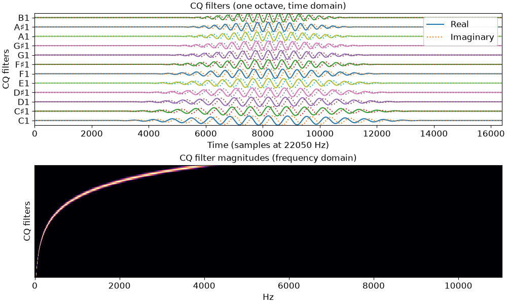

librosa.filters.constant_q
- librosa.filters.constant_q(*, sr, fmin=None, n_bins=84, bins_per_octave=12, window='hann', filter_scale=1, pad_fft=True, norm=1, dtype=<class 'numpy.complex64'>, gamma=0, **kwargs)[source]
Construct a constant-Q basis.
This function constructs a filter bank similar to Morlet wavelets, where complex exponentials are windowed to different lengths such that the number of cycles remains fixed for all frequencies.
By default, a Hann window (rather than the Gaussian window of Morlet wavelets) is used, but this can be controlled by the
windowparameter.Frequencies are spaced geometrically, increasing by a factor of
(2**(1./bins_per_octave))at each successive band.Warning
This function is deprecated as of v0.9 and will be removed in 1.0. See
librosa.filters.wavelet.- Parameters:
- srnumber > 0 [scalar]
Audio sampling rate
- fminfloat > 0 [scalar]
Minimum frequency bin. Defaults to C1 ~= 32.70
- n_binsint > 0 [scalar]
Number of frequencies. Defaults to 7 octaves (84 bins).
- bins_per_octaveint > 0 [scalar]
Number of bins per octave
- windowstring, tuple, number, or function
Windowing function to apply to filters.
- filter_scalefloat > 0 [scalar]
Scale of filter windows. Small values (<1) use shorter windows for higher temporal resolution.
- pad_fftboolean
Center-pad all filters up to the nearest integral power of 2.
By default, padding is done with zeros, but this can be overridden by setting the
mode=field in kwargs.- norm{inf, -inf, 0, float > 0}
Type of norm to use for basis function normalization. See librosa.util.normalize
- gammanumber >= 0
Bandwidth offset for variable-Q transforms.
gamma=0produces a constant-Q filterbank.- dtypenp.dtype
The data type of the output basis. By default, uses 64-bit (single precision) complex floating point.
- **kwargsadditional keyword arguments
Arguments to np.pad() when
pad==True.
- Returns:
- filtersnp.ndarray,
len(filters) == n_bins filters[i]isith time-domain CQT basis filter- lengthsnp.ndarray,
len(lengths) == n_bins The (fractional) length of each filter
- filtersnp.ndarray,
Notes
This function caches at level 10.
Examples
Use a shorter window for each filter
>>> basis, lengths = librosa.filters.constant_q(sr=22050, filter_scale=0.5)
Plot one octave of filters in time and frequency
>>> import matplotlib.pyplot as plt >>> basis, lengths = librosa.filters.constant_q(sr=22050) >>> fig, ax = plt.subplots(nrows=2, figsize=(10, 6)) >>> notes = librosa.midi_to_note(np.arange(24, 24 + len(basis))) >>> for i, (f, n) in enumerate(zip(basis, notes[:12])): ... f_scale = librosa.util.normalize(f) / 2 ... ax[0].plot(i + f_scale.real) ... ax[0].plot(i + f_scale.imag, linestyle=':') >>> ax[0].set(yticks=np.arange(len(notes[:12])), yticklabels=notes[:12], ... ylabel='CQ filters', ... title='CQ filters (one octave, time domain)', ... xlabel='Time (samples at 22050 Hz)') >>> ax[0].legend(['Real', 'Imaginary']) >>> F = np.abs(np.fft.fftn(basis, axes=[-1])) >>> # Keep only the positive frequencies >>> F = F[:, :(1 + F.shape[1] // 2)] >>> librosa.display.specshow(F, x_axis='linear', y_axis='cqt_note', ax=ax[1]) >>> ax[1].set(ylabel='CQ filters', title='CQ filter magnitudes (frequency domain)')
